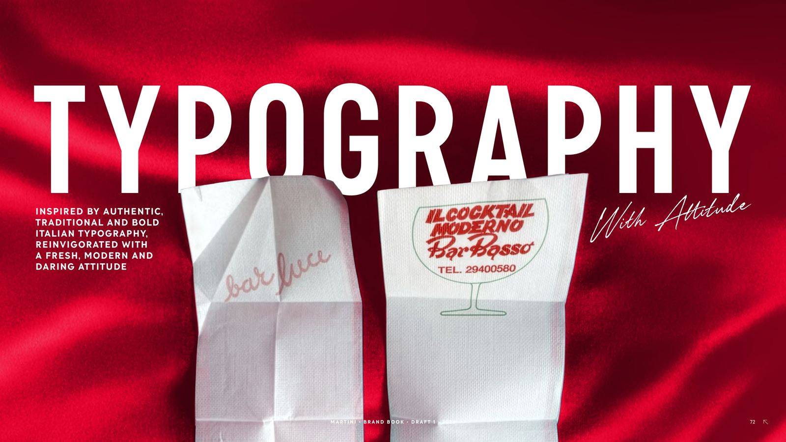
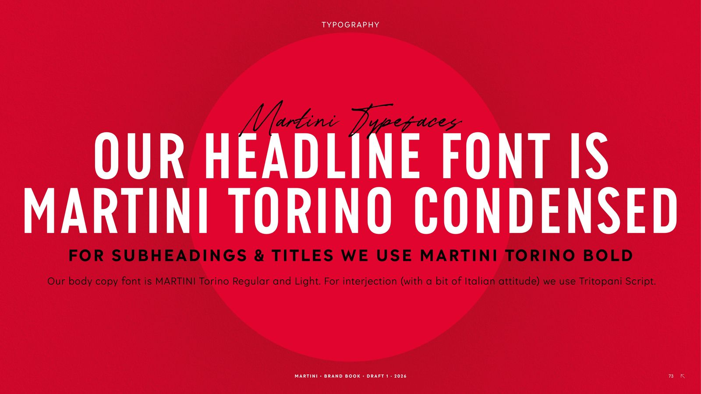
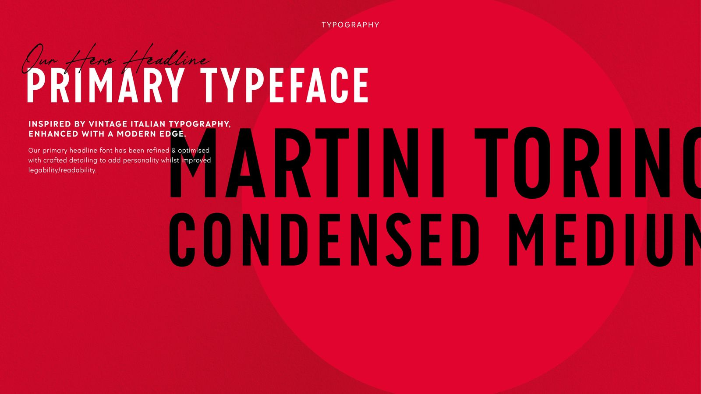
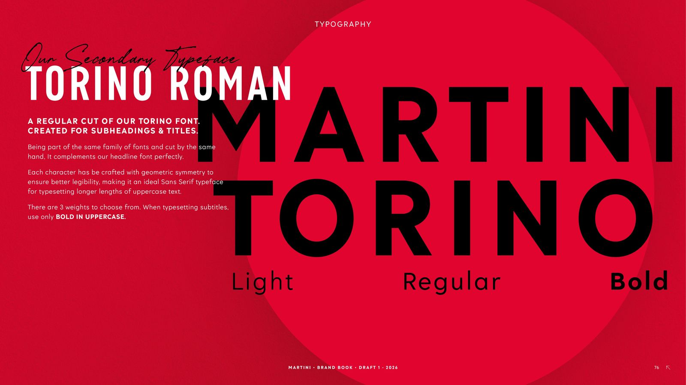
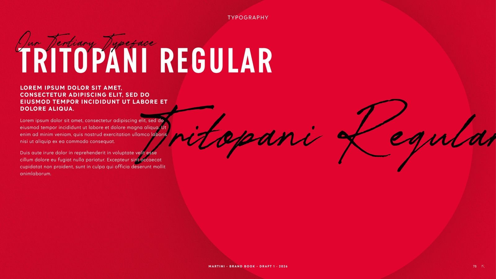
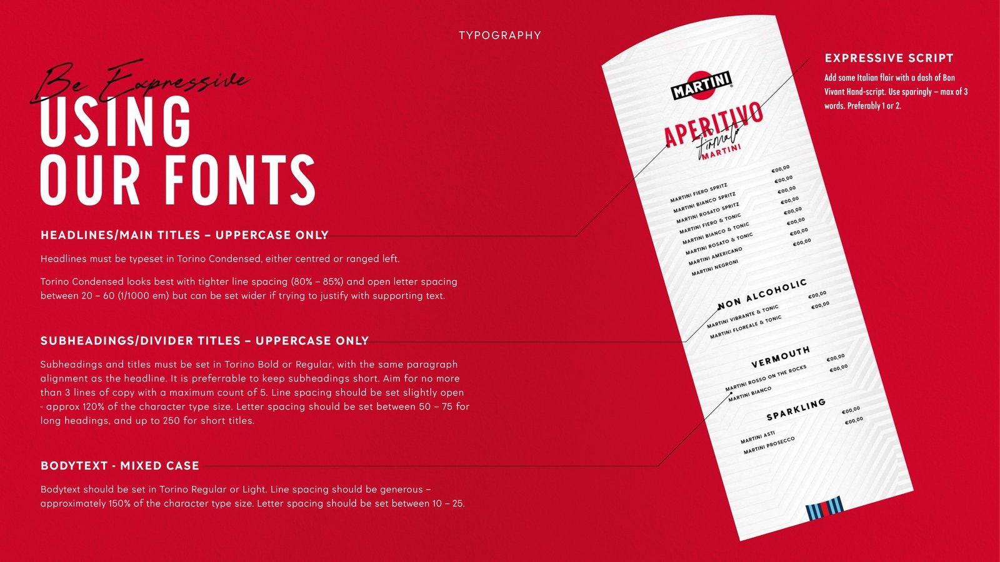
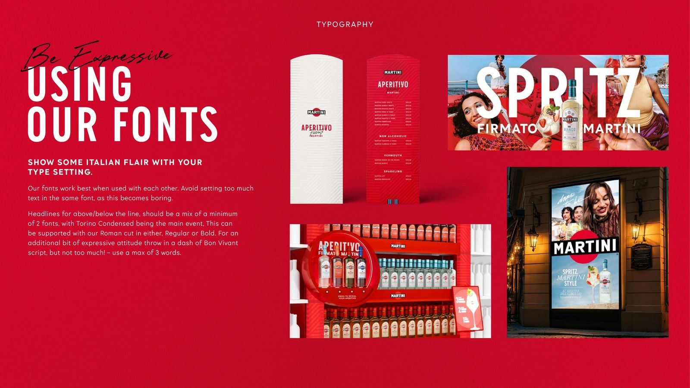
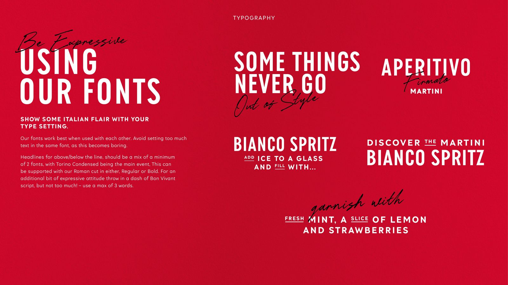

TYPOGRAPHY
FONTS
DOWNLOAD COLLECTIONIn alignment with our evolved BVI and new company policy, MARTINI has developed a bespoke hero font, MARTINI TORINO, and a new script font, MARTINI Sprezzatura, designed to deliver a more distinctive and ownable visual identity. Additional guidance on usage and implementation will be provided as part of the official BVI rollout.
GUIDELINES







